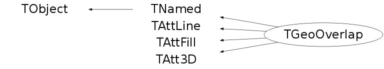

class TGeoOverlap: public TNamed, public TAttLine, public TAttFill, public TAtt3D
TGeoOverlap - base class describing geometry overlaps. Overlaps apply to the nodes contained inside a volume. These should not overlap to each other nor extrude the shape of their mother volume.
Function Members (Methods)
public:
| TGeoOverlap() | |
| TGeoOverlap(const char* name, TGeoVolume* vol1, TGeoVolume* vol2, const TGeoMatrix* matrix1, const TGeoMatrix* matrix2, Bool_t isovlp = kTRUE, Double_t ovlp = 0.01) | |
| virtual | ~TGeoOverlap() |
| void | TObject::AbstractMethod(const char* method) const |
| virtual void | TObject::AppendPad(Option_t* option = "") |
| virtual void | Browse(TBrowser* b) |
| static TClass* | Class() |
| virtual const char* | TObject::ClassName() const |
| virtual void | TNamed::Clear(Option_t* option = "") |
| virtual TObject* | TNamed::Clone(const char* newname = "") const |
| virtual Int_t | Compare(const TObject* obj) const |
| virtual void | TNamed::Copy(TObject& named) const |
| virtual void | TObject::Delete(Option_t* option = "")MENU |
| Int_t | TAttLine::DistancetoLine(Int_t px, Int_t py, Double_t xp1, Double_t yp1, Double_t xp2, Double_t yp2) |
| virtual Int_t | DistancetoPrimitive(Int_t px, Int_t py) |
| virtual void | Draw(Option_t* option = "")MENU |
| virtual void | TObject::DrawClass() constMENU |
| virtual TObject* | TObject::DrawClone(Option_t* option = "") constMENU |
| virtual void | TObject::Dump() constMENU |
| virtual void | TObject::Error(const char* method, const char* msgfmt) const |
| virtual void | TObject::Execute(const char* method, const char* params, Int_t* error = 0) |
| virtual void | TObject::Execute(TMethod* method, TObjArray* params, Int_t* error = 0) |
| virtual void | ExecuteEvent(Int_t event, Int_t px, Int_t py) |
| virtual void | TObject::Fatal(const char* method, const char* msgfmt) const |
| virtual void | TNamed::FillBuffer(char*& buffer) |
| virtual TObject* | TObject::FindObject(const char* name) const |
| virtual TObject* | TObject::FindObject(const TObject* obj) const |
| virtual Option_t* | TObject::GetDrawOption() const |
| static Long_t | TObject::GetDtorOnly() |
| virtual Color_t | TAttFill::GetFillColor() const |
| virtual Style_t | TAttFill::GetFillStyle() const |
| TGeoHMatrix* | GetFirstMatrix() const |
| TGeoVolume* | GetFirstVolume() const |
| virtual const char* | TObject::GetIconName() const |
| virtual Color_t | TAttLine::GetLineColor() const |
| virtual Style_t | TAttLine::GetLineStyle() const |
| virtual Width_t | TAttLine::GetLineWidth() const |
| virtual const char* | TNamed::GetName() const |
| virtual char* | TObject::GetObjectInfo(Int_t px, Int_t py) const |
| static Bool_t | TObject::GetObjectStat() |
| virtual Option_t* | TObject::GetOption() const |
| Double_t | GetOverlap() const |
| TPolyMarker3D* | GetPolyMarker() const |
| TGeoHMatrix* | GetSecondMatrix() const |
| TGeoVolume* | GetSecondVolume() const |
| virtual const char* | TNamed::GetTitle() const |
| virtual UInt_t | TObject::GetUniqueID() const |
| virtual Bool_t | TObject::HandleTimer(TTimer* timer) |
| virtual ULong_t | TNamed::Hash() const |
| virtual void | TObject::Info(const char* method, const char* msgfmt) const |
| virtual Bool_t | TObject::InheritsFrom(const char* classname) const |
| virtual Bool_t | TObject::InheritsFrom(const TClass* cl) const |
| virtual void | TObject::Inspect() constMENU |
| void | TObject::InvertBit(UInt_t f) |
| virtual TClass* | IsA() const |
| virtual Bool_t | TObject::IsEqual(const TObject* obj) const |
| Bool_t | IsExtrusion() const |
| virtual Bool_t | IsFolder() const |
| Bool_t | TObject::IsOnHeap() const |
| Bool_t | IsOverlap() const |
| virtual Bool_t | IsSortable() const |
| virtual Bool_t | TAttFill::IsTransparent() const |
| Bool_t | TObject::IsZombie() const |
| virtual void | TNamed::ls(Option_t* option = "") const |
| void | TObject::MayNotUse(const char* method) const |
| virtual void | TAttLine::Modify() |
| virtual Bool_t | TObject::Notify() |
| void | TObject::Obsolete(const char* method, const char* asOfVers, const char* removedFromVers) const |
| static void | TObject::operator delete(void* ptr) |
| static void | TObject::operator delete(void* ptr, void* vp) |
| static void | TObject::operator delete[](void* ptr) |
| static void | TObject::operator delete[](void* ptr, void* vp) |
| void* | TObject::operator new(size_t sz) |
| void* | TObject::operator new(size_t sz, void* vp) |
| void* | TObject::operator new[](size_t sz) |
| void* | TObject::operator new[](size_t sz, void* vp) |
| virtual void | Paint(Option_t* option = "") |
| virtual void | TObject::Pop() |
| virtual void | Print(Option_t* option = "") constMENU |
| virtual void | PrintInfo() const |
| virtual Int_t | TObject::Read(const char* name) |
| virtual void | TObject::RecursiveRemove(TObject* obj) |
| virtual void | TAttFill::ResetAttFill(Option_t* option = "") |
| virtual void | TAttLine::ResetAttLine(Option_t* option = "") |
| void | TObject::ResetBit(UInt_t f) |
| void | SampleOverlap(Int_t npoints = 1000000)MENU |
| virtual void | TObject::SaveAs(const char* filename = "", Option_t* option = "") constMENU |
| virtual void | TAttFill::SaveFillAttributes(ostream& out, const char* name, Int_t coldef = 1, Int_t stydef = 1001) |
| virtual void | TAttLine::SaveLineAttributes(ostream& out, const char* name, Int_t coldef = 1, Int_t stydef = 1, Int_t widdef = 1) |
| virtual void | TObject::SavePrimitive(ostream& out, Option_t* option = "") |
| void | TObject::SetBit(UInt_t f) |
| void | TObject::SetBit(UInt_t f, Bool_t set) |
| virtual void | TObject::SetDrawOption(Option_t* option = "")MENU |
| static void | TObject::SetDtorOnly(void* obj) |
| virtual void | TAttFill::SetFillAttributes()MENU |
| virtual void | TAttFill::SetFillColor(Color_t fcolor) |
| virtual void | TAttFill::SetFillStyle(Style_t fstyle) |
| void | SetFirstMatrix(TGeoMatrix* matrix) |
| void | SetFirstVolume(TGeoVolume* vol) |
| void | SetIsExtrusion(Bool_t flag = kTRUE) |
| void | SetIsOverlap(Bool_t flag = kTRUE) |
| virtual void | TAttLine::SetLineAttributes()MENU |
| virtual void | TAttLine::SetLineColor(Color_t lcolor) |
| virtual void | TAttLine::SetLineStyle(Style_t lstyle) |
| virtual void | TAttLine::SetLineWidth(Width_t lwidth) |
| virtual void | TNamed::SetName(const char* name)MENU |
| virtual void | TNamed::SetNameTitle(const char* name, const char* title) |
| void | SetNextPoint(Double_t x, Double_t y, Double_t z) |
| static void | TObject::SetObjectStat(Bool_t stat) |
| void | SetOverlap(Double_t ovlp) |
| void | SetSecondMatrix(TGeoMatrix* matrix) |
| void | SetSecondVolume(TGeoVolume* vol) |
| virtual void | TNamed::SetTitle(const char* title = "")MENU |
| virtual void | TObject::SetUniqueID(UInt_t uid) |
| virtual void | ShowMembers(TMemberInspector& insp) |
| virtual Int_t | TNamed::Sizeof() const |
| virtual void | Sizeof3D() const |
| virtual void | Streamer(TBuffer& b) |
| void | StreamerNVirtual(TBuffer& b) |
| virtual void | TObject::SysError(const char* method, const char* msgfmt) const |
| Bool_t | TObject::TestBit(UInt_t f) const |
| Int_t | TObject::TestBits(UInt_t f) const |
| virtual void | TObject::UseCurrentStyle() |
| void | Validate() constMENU |
| virtual void | TObject::Warning(const char* method, const char* msgfmt) const |
| virtual Int_t | TObject::Write(const char* name = 0, Int_t option = 0, Int_t bufsize = 0) |
| virtual Int_t | TObject::Write(const char* name = 0, Int_t option = 0, Int_t bufsize = 0) const |
protected:
| virtual void | TObject::DoError(int level, const char* location, const char* fmt, va_list va) const |
| void | TObject::MakeZombie() |
private:
| TGeoOverlap(const TGeoOverlap&) | |
| TGeoOverlap& | operator=(const TGeoOverlap&) |
Data Members
public:
| enum EOverlapType { | kGeoOverlap | |
| kGeoExtrusion | ||
| }; | ||
| enum TObject::EStatusBits { | kCanDelete | |
| kMustCleanup | ||
| kObjInCanvas | ||
| kIsReferenced | ||
| kHasUUID | ||
| kCannotPick | ||
| kNoContextMenu | ||
| kInvalidObject | ||
| }; | ||
| enum TObject::[unnamed] { | kIsOnHeap | |
| kNotDeleted | ||
| kZombie | ||
| kBitMask | ||
| kSingleKey | ||
| kOverwrite | ||
| kWriteDelete | ||
| }; |
protected:
| Color_t | TAttFill::fFillColor | fill area color |
| Style_t | TAttFill::fFillStyle | fill area style |
| Color_t | TAttLine::fLineColor | line color |
| Style_t | TAttLine::fLineStyle | line style |
| Width_t | TAttLine::fLineWidth | line width |
| TPolyMarker3D* | fMarker | points in the overlapping region |
| TGeoHMatrix* | fMatrix1 | positioning matrix for first volume |
| TGeoHMatrix* | fMatrix2 | positioning matrix for second volume |
| TString | TNamed::fName | object identifier |
| Double_t | fOverlap | overlap distance |
| TString | TNamed::fTitle | object title |
| TGeoVolume* | fVolume1 | first volume |
| TGeoVolume* | fVolume2 | second volume |
Class Charts
{kind=link}
{kind=link}
{kind=link}
{kind=link}

Function documentation
TGeoOverlap(const char* name, TGeoVolume* vol1, TGeoVolume* vol2, const TGeoMatrix* matrix1, const TGeoMatrix* matrix2, Bool_t isovlp = kTRUE, Double_t ovlp = 0.01)
Creates a named overlap belonging to volume VOL and having the size OVLP.
Int_t Compare(const TObject* obj) const
Method to compare this overlap with another. Returns :
-1 - this is smaller than OBJ
0 - equal
1 - greater
void Draw(Option_t* option = "")
Draw the overlap. One daughter will be blue, the other green, extruding points red.
void SampleOverlap(Int_t npoints = 1000000)
Draw overlap and sample with random points the overlapping region.
TGeoOverlap(const TGeoOverlap& )
TGeoOverlap& operator=(const TGeoOverlap& )
void SetIsExtrusion(Bool_t flag = kTRUE)
{TObject::SetBit(kGeoExtrusion,flag); TObject::SetBit(kGeoOverlap,!flag);}void SetIsOverlap(Bool_t flag = kTRUE)
{TObject::SetBit(kGeoOverlap,flag); TObject::SetBit(kGeoExtrusion,!flag);}